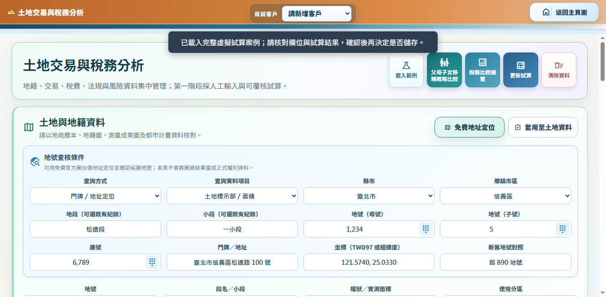
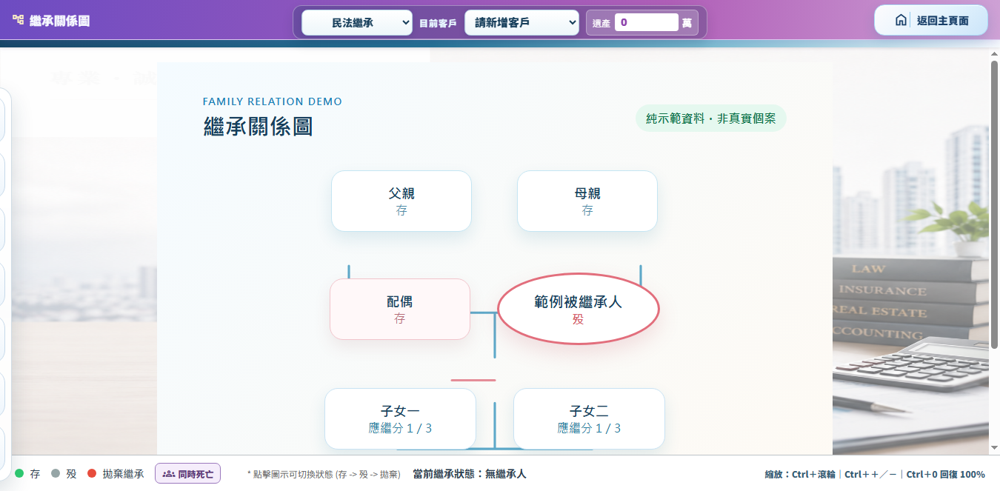

客戶資料
集中整理身分、聯絡、家庭與案件基本資訊，讓服務從正確資料開始。
PROFESSIONAL PLANNING WORKSPACE
傳承智策協助專業人員整理客戶資料、比較移轉方案，並以圖表呈現繼承、土地與稅務的概略試算結果。
適合以圖形化方式，和客戶一起整理條件、看懂差異、確認下一步。
START HERE
不用一次讀完所有內容；從目前需要的方向開始即可。
SYSTEM OVERVIEW
集中整理身分、聯絡、家庭與案件基本資訊，讓服務從正確資料開始。
用圖表與表列呈現不同移轉方式的概略稅費、時間與風險差異。
程式與資料分流；資料包須通過版本、雜湊與簽章驗證。
VISUAL WALKTHROUGH
以下為功能畫面示意，實際內容會依個案資料、版本及裝置而異。
案件入口
從客戶資料、繼承關係到各項專業工具，依案件流程快速進入。

條件比較
將移轉當期與下一代日後出售的可能稅費，放在同一條件下比較。

關係整理
用關係圖協助說明家庭成員、繼承順位與下一步需要確認的資料。
三張圖片均由乾淨暫存環境或內建範例條件擷取，不使用客戶真實案件畫面。
DOWNLOAD
目前最新驗收版本：17.0.102。正式發行檔尚未公開；完成 Windows 簽章、Google Play 正式簽署及 Apple 平台簽署後，才會列於官方 Release 頁。
Windows 客戶版、Windows 管理主控版及 Android 測試版用途不同；管理主控版不可交付客戶。
VERIFIED UPDATES
USER GUIDE
從第一次建立客戶、繼承關係、稅務比較到備份與報表，依「用途、準備、步驟、結果、注意」閱讀，不必先記住操作方式。
SUPPORT
先查看平台支援、安裝與更新流程、資料處理與常見問題；請勿在信件中傳送身分證號、完整地址、案件資料或授權碼。
本系統提供資料整理與概略試算，不構成法律、稅務、估價或投資意見。涉及申報、移轉、簽約或重大決策前，請以主管機關資料及適格專業人士意見為準。